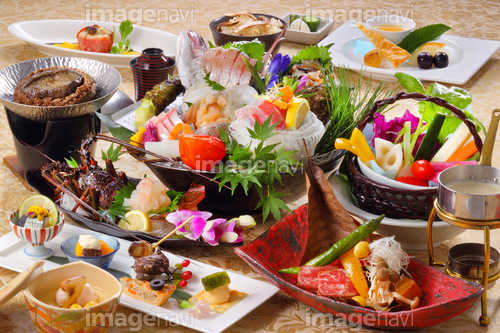

タブ切り替え：jquery.tab.js
- 特徴
- 同一ページ内複数設置可・CSSでレスポンシブ対応。
スムーススクロール（setting_option.jsに記載してあるもの か 同梱してあるsmoothscroll.js）を使うと、
スマホ時に選択したタブを開いた状態で、そこまで移動してくれるのでオススメ。


お料理
大自然に囲まれた当館では、一年を通して新鮮な食材をご用意しております。 四季折々の食材と、新鮮な海の幸をふんだんに使った懐石料理を是非ご賞味下さい。
これはサンプルテキストです。これはサンプルテキストです。これはサンプルテキストです。 これはサンプルテキストです。これはサンプルテキストです。これはサンプルテキストです。
お風呂

四季折々の景観を存分にお愉しみ頂ける、豊かな自然に囲まれた広々とした露天風呂。 広々とした作りで、ゆっくりとお湯に浸かって頂けます。
これはサンプルテキストです。これはサンプルテキストです。これはサンプルテキストです。 これはサンプルテキストです。これはサンプルテキストです。これはサンプルテキストです。
お部屋

窓の外に広がる大自然を眺めてながら過ごす、ゆったりと落ち着きのある時間。 それぞれ趣向を凝らしたお部屋から異なる景観でお愉しみいただけます。どうぞごゆっくりおくつろぎ下さい。
これはサンプルテキストです。これはサンプルテキストです。これはサンプルテキストです。 これはサンプルテキストです。これはサンプルテキストです。これはサンプルテキストです。
周辺観光
これはサンプルテキストです。これはサンプルテキストです。これはサンプルテキストです。 これはサンプルテキストです。これはサンプルテキストです。これはサンプルテキストです。
これはサンプルテキストです。これはサンプルテキストです。これはサンプルテキストです。 これはサンプルテキストです。これはサンプルテキストです。これはサンプルテキストです。